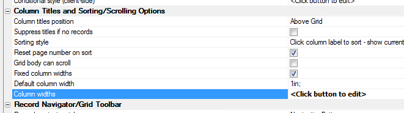
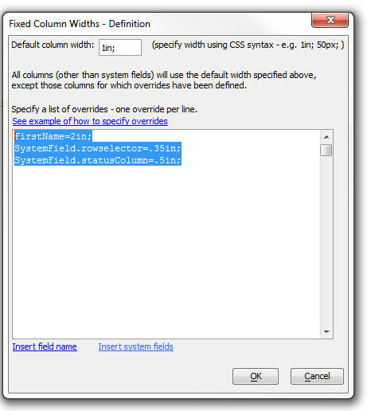

Grid - Fixed Column Widths
Normally, the Grid column widths are dynamic - they adjust to accommodate the data displayed in the column. You can now specify fixed column widths. When you select this option, you can set a default width for all columns that are not explicitly set, and and you can set explicit widths for any of the Grid columns that you choose to set.The column widths set in this manner override any width that you may have set in the 'Cell in-line style' for a column.
If you specify that the Grid part can scroll (see Grid Scrolling V11), then it is important to specify fixed width columns, or else the column widths in the title row will not match the column widths in the Grid body section.
You can only set column widths for the Grid part when it set to Tabular Layout. Setting column widths this way is only meaningful for read-only grids using Label controls, because the width of TextBox controls is controlled by the TextBox Size property rather than by the CSS. You can, however, have a read-only fixed-column-width tabular grid with a read-write Detail part; this is a recommended practice for mobile applications.
To open the dialog to set custom column widths, click the smart field in the the 'Column widths' property.

The dialog allows you to set the widths of your columns and also of the system columns.
